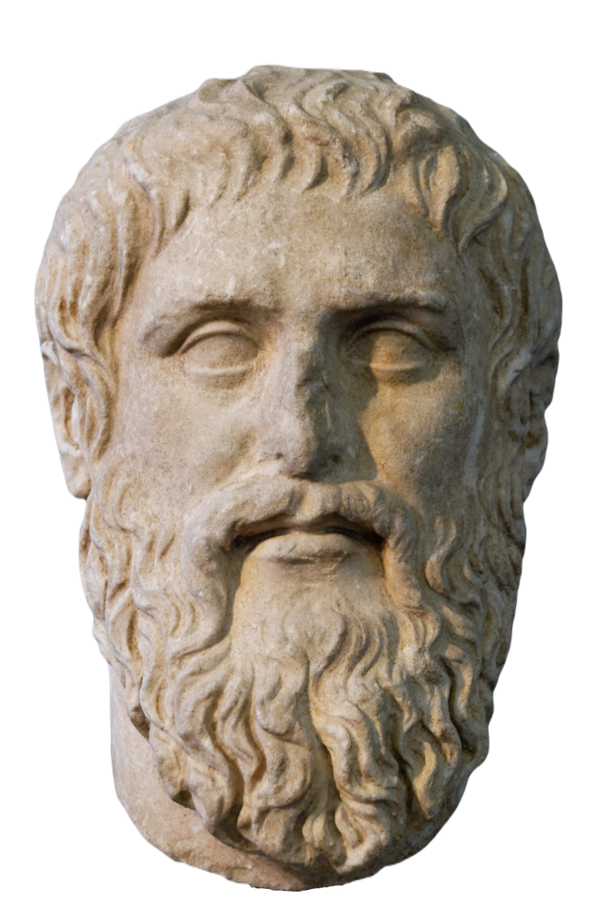
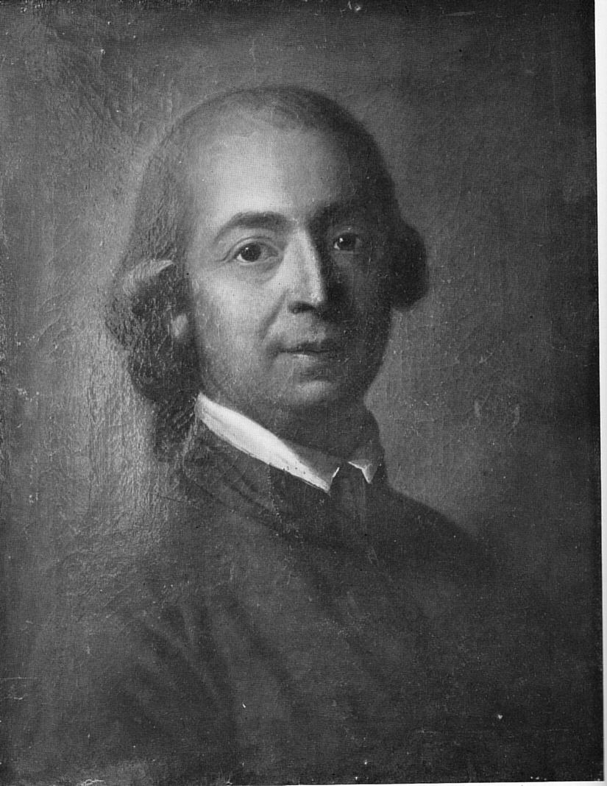

새로운 기록 기술이 등장할 때마다
똑같은 논쟁이 반복됨
00이 주차의 위상
1주차에서 "매체는 새로 등장했을 때 보인다"고 했음. 오늘이 그 첫 사례임. 알파벳이라는 새 매체 앞에서 철학이 무엇을 말했는지 봄.
똑같은 논쟁이 반복됨."
- 두 사람은 2,000년을 사이에 두고 있음.
- 그런데 똑같이 "말·소리가 근원이고 문자는 파생"이라고 주장함.
- 둘 다 몸과 현전을 중시함.
- 그리고 이 구도가 곧 데리다가 '로고스중심주의'라 부르며 비판한 그것임.
01오늘 만날 개념
- 파이드로스Phaidros
- 플라톤의 대화편. 소크라테스가 파이드로스라는 청년과 나눈 대화 형식임. 끝부분(274c~278b)에 문자 비판이 나옴.
- 현전現前 · presence
- "지금 여기 있음". 말할 때는 말하는 사람이 눈앞에 있음. 글에는 저자가 없음.
- 파르마콘pharmakon
- 그리스어로 약이면서 동시에 독임. 영어 pharmacy(약국)의 어원. 같은 물질이 용량에 따라 약도 독도 됨.
- 로고스중심주의logocentrism
- 말(logos)을 글보다 위에 두는 서구 사상의 오랜 습관임. 데리다가 붙인 이름이자 비판어임.
- 차연différance
- 데리다가 만든 말. 差異(다름) + 延期(미룸). 의미는 다른 것과의 차이로만 정해지고, 확정은 계속 미뤄짐.
- 에테르ether
- 헤르더가 상정한 제3의 유동체. "사고와 표현을 가능하게 하는 무엇"임. 1주차 metaxu가 이름을 바꿔 돌아온 것.
- 성찰Besonnenheit
- 헤르더의 개념. 각 감각으로 들어온 데이터를 종합하는 공통감각을 쓰는 능력임.
- 질풍노도Sturm und Drang
- 18세기 독일 문학운동. 이성보다 감정 · 자연 · 개성을 앞세움. 헤르더가 이론적 뒷배였음.
- 간헐적 사유심혜련(2024)
- 디지털 환경에서 사유가 연속되지 못하고 끊기며 진행되는 방식임.
022,400년 전의 걱정
배우지는 않고 들은 것만 많은 사람이 될 것이고,
사실은 아는 게 없는데 많이 안다고 착각하게 될 것임."
대개 스마트폰 · 검색 · 생성 AI를 떠올림. 그 오답이 오늘 강의의 전부임. 2,400년 전 문장이 지금 문장으로 읽힘.
왜 하필 그때인가
- 기원전 5~4세기 그리스에 알파벳이 보급되던 시기임.
- 그전까지 지식은 암송으로 전해졌음.
- 호메로스의 『일리아스』는 읽는 것이 아니라 외워서 부르는 것이었음. 1만 5천 행을 통째로 외웠고, 그것이 지식인의 조건이었음.
- → 1주차 「매체는 언제 보이는가」의 첫 사례임.

같은 논쟁의 다섯 번 반복
- 1477년 이탈리아 학자 히에로니모 스콰르차피코 — "인쇄술 때문에 책이 흔해져 사람들이 게을러짐"
- 1858년 『뉴욕타임스』 — "전신 때문에 하찮은 소식이 쏟아짐"
- 1930년대 — "라디오 때문에 아이들이 책을 안 읽음"
- 2007년 — "검색 때문에 아무도 외우지 않음"
- → 문장의 주어만 바뀜.
03『파이드로스』의 문자 비판
이어지는 대목 — "이제 사람들은 알파벳 때문에 배우지는 않고 들은 것만 많은 사람이 될 것이고, 사실은 전혀 아는 것이 없는데도 스스로 많이 안다고 생각하게 될 것입니다. 그리고 그들은 진정으로 지혜로운 사람이 되는 것이 아니라 가상으로 지혜롭게 보이기만 하는 자들이 되므로 다른 사람과 소통하기 어려울 것입니다."
비판의 세 갈래
① 현전의 문제
말은 근원, 문자는 파생- 말할 때는 사람이 거기 있음. 표정·목소리·망설임이 함께 옴
- 글에는 저자가 없음. 종이만 있음
② 기억에서 망각으로
게으른 학습자- 밖에 저장해 두면 안에 담아둘 이유가 없어짐
③ 거짓의 유포
설득적 구성- 글은 반박할 수 없음. 되물을 상대가 없음
- 잘 쓰인 거짓말은 잘 쓰였다는 이유로 믿김
| 비판 | 지금의 사례 |
|---|---|
| 현전의 부재 | 메신저로 "알겠어"가 오면 화가 난 건지 알 수 없음. 만나서 들으면 앎 |
| 기억의 외부화 | 스마트폰 이후 외우고 있는 전화번호가 몇 개인가. 부모님 번호는 외우는가 |
| 거짓의 유포 | 그럴듯한 문체의 가짜뉴스가 어설픈 문체의 진짜뉴스보다 잘 퍼짐 |
왜 대화가 우월한가 — 플라톤의 논거
- 대화에서는 즉각 대답이 요구됨.
- 대화에서는 책임 있는 언급이 요구됨. 말한 사람이 거기 있기 때문임.
- 철학적 사유는 논증 → 반론 → 재반론의 왕복에서만 가능함.
- 글은 한 방향임. 물어도 답하지 않음.
- 플라톤은 이 비판을 글로 썼음. 그것도 대화 형식의 글로.
- 스스로 물어볼 것 — "왜 플라톤은 자기가 비판한 매체를 썼는가."
- 여기서 파르마콘이 나옴.
04파르마콘 — 약이자 독
문자는 치료제이자 독약으로 쓰일 수 있는 파르마콘 같은 존재임.
유익
약으로서의 문자- 많은 내용을 오래 보존함
- 넓은 지역에 전달됨
- 없었으면 플라톤의 글도 우리에게 오지 않았음
해악
독으로서의 문자- 인간의 기억 능력이 퇴보함
- 거짓의 유포가 쉬워짐
어느 한쪽만 보면 틀림. 파르마콘은 기술의 양가성에 대한 최초의 진술임.
파르마콘은 이 강의의 반복 구조임
| 주차 | 대상 | 약이자 독 |
|---|---|---|
| 벤야민 4~5주 | 아우라의 상실 | 손실이자 민주화 |
| 아도르노 6주 | 대중문화 | 오락이자 기만 |
| 맥루언 9~10주 | 매체 일반 | 확장이자 절단 |
| 플루서 13주 | 기술적 이미지 | 자유이자 프로그래밍 |
| 육후이 15주 | 재귀적 기술 | 열린 지속이자 닫힌 결정론 |
- 다음 각각에 대해 약과 독을 한 줄씩 적어 볼 것 — 번역 앱 · 내비게이션 · 자동완성 · 추천 알고리즘.
- 그리고 약과 독의 비율은 무엇이 정하는가. 기술인가, 사용법인가, 제도인가.
05데리다 — 차연과 해체
- 『그라마톨로지』 — 로고스중심주의 비판.
- 서구 사상은 늘 이항대립을 만들고 한쪽을 위에 뒀음.
- 말/글 · 이성/광기 · 남성/여성 · 주체/타자 · 원본/복제.
- 데리다는 이 대립을 우열이 아니라 보완 관계로 다시 읽음.
- 차연(différance) — 불변의 진리를 해체함. 의미는 차이의 그물에서만 생기고, 확정은 계속 미뤄짐.
- 사전에서 '자유'를 찾으면 '구속받지 않음'이라 나옴.
- '구속'을 찾으면 '자유를 제한함'이라 나옴.
- 끝까지 가도 '진짜 뜻' 자체는 나오지 않음. 뜻은 늘 다른 말과의 차이로만 있음.
- → 3주차 니체(언어는 은유) · 12주차 키틀러(언어는 데이터)와 이어짐.
06헤르더 — 소리의 철학

- 주요 저작 — 『언어의 기원』, 『인간 영혼의 느낌과 인식에 대하여』.
- 반계몽주의와 질풍노도 문학 — 이성 일변도에 대한 반발임.
언어 중심 철학
- 성찰(Besonnenheit) — 각 감각으로 들어온 데이터를 종합하는 공통감각을 사용하는 능력임.
- 언어는 성찰이 청각과 상호작용하며 발명되었음.
- 표현과 반복을 통해 확산됐음.
- 감각과 이성의 융합 → 계몽주의의 "재현 수단으로서의 언어관"을 비판함.
계몽주의의 언어관
언어는 도구- 언어는 이미 있는 생각을 담아 나르는 도구임
헤르더의 언어관
언어는 자리- 언어는 생각이 생겨나는 자리 자체임. 언어 없이는 성찰도 없음
- 한국어에는 '눈치'라는 말이 있고 영어에는 없음. 영어권 사람이 눈치를 못 채는 것은 아님. 다만 그 경험을 하나로 묶어 생각하기가 더 어려움.
- 색이름이 둘(밝음/어둠)뿐인 언어권 사람은 파랑과 초록을 덜 빨리 구분한다는 실험이 있음.
- → 언어는 생각을 나르기만 하는 것이 아니라 생각의 모양을 만듦.
07에테르 — metaxu의 귀환
에테르 — 사고와 표현을 가능케 하는, 유동체와 비슷한 제3의 어떤 것임. 에테르가 언어와 사고를 전달해 인지·대화·행동을 유발함.
감각 기관 사이를 매개
이어지게 함
- 아리스토텔레스의 중간자가 2,000년 뒤 헤르더에게 에테르라는 이름으로 돌아옴.
- 헤르더는 "에테르가 언어와 세계의 일치를 보장한다"고 함.
- 스스로 물어볼 것 — 무엇이 보장하는가. 누가 보증하는가.
문자보다 소리
- 언어의 진짜 매체는 문자가 아니라 소리임. 소리는 몸으로 감각됨.
- 언어는 재현(representation)이 아니라 반복임.
- 둘 다 말·소리가 근원이고 문자는 파생이라고 봄.
- 둘 다 몸과 현전을 중시함.
- 2,000년을 사이에 두고 같은 편임.
- 그리고 이것이 데리다가 비판한 바로 그 구도임.
08매체와 사유 방식
심혜련(2024) II부 4장 1절 「매체와 사유 방식의 변화」 pp.239~243 + 4절 「간헐적 사유」 pp.262~266.
어떤 매체를 쓰느냐가 어떻게 사유하느냐를 바꿈. 심혜련은 웹툰·웹소설을 예로 듦.
| 매체 | 화면 구성 | 수용 방식 |
|---|---|---|
| 종이 만화 | 한 장에 여러 프레임 | 줄거리 중심 |
| 웹툰 | 한 화면에 한 프레임, 세로 스크롤 | 이미지 중심, 표정 중심 |
- 공간만 바뀐 것이 아니라 표현 방식과 수용 방식이 함께 바뀌었음.
- → 9~10주차 이니스·옹·맥루언의 매체결정주의로 가는 다리임.
간헐적 사유
- 디지털 환경에서 사유가 연속적으로 이어지지 못하고 끊기며 진행되는 방식임.
- 알림 · 전환 · 스크롤이 만드는 단절임.
- 지난 10분 동안 화면을 몇 번 전환했는가.
- 지금 이 자료를 읽는 동안 알림이 몇 번 왔는가.
- 마지막으로 한 가지를 30분 연속으로 생각한 것이 언제인가.
- 플라톤은 문자가 기억을 망친다고 했음.
- 심혜련은 디지털이 사유의 연속성을 망친다고 말함.
- → 14주차 비릴리오의 피크노렙시(빈번한 지각 단절)와 정확히 겹침.
09기억의 외부화
변정수(2025) 4부 8장 「외부 메모리 관리 알고리즘과 기억의 외부화」.
외부 메모리 관리 알고리즘이란
- 데이터가 주기억장치(RAM)에 다 안 들어갈 때, 외부 저장장치와 주고받으며 처리하는 알고리즘임.
- 핵심 문제 둘 — 무엇을 안에 두고 무엇을 밖에 둘 것인가. 그리고 언제 불러올 것인가.
여행을 갈 때 무엇을 외우고 무엇을 메모앱에 남기는가. 그것이 바로 이 알고리즘임. 잘못 고르면 현장에서 "메모에 있는데 어디 적었는지 기억이 안 남"이 됨. 캐시 미스(cache miss)임.
- 플라톤 — "문자만을 믿고 그 기호들을 도구로 삼아 외부에서 기억을 불러올 것"
- 이것은 정확히 외부 메모리 접근(external memory access)의 묘사임.
- 플라톤이 컴퓨터과학 용어로 말하고 있었던 셈임.
확장된 마음 — 클라크와 차머스
- 잉가는 미술관 위치를 머릿속에서 떠올려 찾아감.
- 오토는 알츠하이머 환자라 늘 수첩을 갖고 다니며, 수첩을 보고 찾아감.
- 둘 다 목적지에 도착함. 기능이 같음.
- 물음 — 오토의 수첩은 그의 기억인가, 아닌가.
기능이 같다면 수첩도 기억임. 마음은 두개골에서 끝나지 않음.
세 입장을 나란히 놓음
플라톤
상실- 기억의 외부화는 상실임
- 내부에서 기억하려는 노력이 사라짐
클라크 · 차머스
확장- 기억의 외부화는 확장임
- 외부 저장장치도 마음의 일부임
심혜련
간헐화- 확장이면서 동시에 간헐화임
- 이어지지 않는 사유가 됨
- 검색증강생성(RAG) · 벡터DB · 노트앱 · 챗봇 대화 기록 — 이것들은 내 기억인가.
- 세 입장 중 어디에 설 것인가. 근거를 댈 것.
- 추가로 — 오토의 수첩은 주머니 안에 있음. 챗봇 대화 기록은 남의 서버에 있고 회사가 지울 수도 있음. 그래도 내 기억인가.
10정리 · 흔한 오해 · 토론
이번 주 개념 다섯
- 현전(presence) 지금 여기 있음. 말에는 있고 글에는 없는 것.
- 파르마콘 약이면서 독. 기술의 이중성을 말하는 최초의 개념임.
- 차연(différance) 의미는 차이로만 생기고 확정은 계속 미뤄짐.
- 에테르 감각과 사고를 매개하는 제3의 것. metaxu의 재등장임.
- 기억의 외부화 기억을 몸 밖 매체에 맡기는 것. 플라톤의 걱정이자 지금 우리의 조건임.
흔한 오해 셋
- 교정 — 플라톤은 문자의 유익도 인정함(파르마콘).
- 이분법이 아니라 양가성의 최초 진술임. 그리고 그 자신이 글을 썼음.
- 교정 — 아님. 데리다는 우열 구도 자체를 해체함.
- "글이 우위"로 뒤집는 것이 아니라, 이항대립을 보완 관계로 다시 읽는 것임.
- 교정 — 클라크·차머스는 좋다/나쁘다를 말하지 않음.
- "그것도 마음이다"라는 사실 주장임. 가치 판단은 별도 논의임.
토론 질문
- 플라톤의 인용문에서 '문자'를 'AI'로 바꿔 읽어 볼 것.
어디까지 성립하고 어디서 깨지는가. "외부에서 기억을 불러올 것" — 성립함. "설득적 구성을 통한 거짓말" — 성립함. 그런데 AI는 되물을 수 있음. 플라톤이 글을 비판한 가장 큰 이유가 사라짐. 이 차이는 결정적인가. - 검색증강생성(RAG)·벡터DB는 파르마콘인가.
치료제와 독약의 비율은 무엇이 결정하는가. 기술인가, 사용법인가, 제도인가. - '간헐적 사유'는 AI 의존적 사유의 진단어로 쓸 수 있는가.
아니면 AI 사유는 다른 종류의 사유인가. - 헤르더의 에테르가 "언어와 세계의 일치를 보장"한다면, 임베딩 벡터공간은 무엇을 보장하는가.
임베딩은 의미의 가까움을 거리로 바꿈. 그런데 그 거리가 세계와의 일치를 보장하는가. - 플라톤은 대화를 옹호했음. AI와의 대화는 그가 말한 대화인가.
즉각 대답함 — 그렇다. 책임 있는 언급을 하는가 — 틀렸을 때 누가 책임지는가. - 오토의 수첩이 기억이라면, 챗봇 대화 기록은 내 기억인가.
그것이 남의 서버에 있어도 그러한가.
11참고자료
이번 주 읽기
- A 메르쉬 (2009). 『매체이론』 — 2장
- C 심혜련 (2024). 『21세기의 매체철학』 — II부 4장 1절 pp.239~243 + 4절 pp.262~266
- D 변정수 (2025). 『알고리즘으로 철학하기』 — 4부 8장
논문
- 주광순 (2007). 플라톤의 구술성과 문자성. 『대동철학』, 38, 97–120.
- 김성대 (2002). 헤르더의 언어기원론 연구. 『독어교육』, 23, 135–182.
- Clark, A., & Chalmers, D. (1998). The extended mind. Analysis, 58(1), 7–19. 11쪽. 학부생이 끝까지 읽을 수 있는 드문 분석철학 논문
원전
- 플라톤. 『파이드로스』 — 274c~278b만
- 자크 데리다. 『그라마톨로지』 — 요지만
- 요한 고트프리트 폰 헤르더. 『언어의 기원』
- 월터 옹. 『구술문화와 문자문화』 9~10주차 선행 읽기로도 좋음
이어지는 주차
- 3주차 — 이미지·정신·가면: 레싱·헤겔·니체 상징성
오늘이 말과 글의 문제였다면, 다음은 이미지와 언어의 문제임.